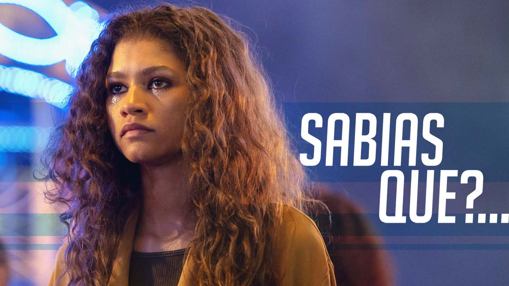

Curiosidades Euphoria

Continuamos a trazer curiosidades sobre as tuas séries favoritas e desta vez vamos dar a conhecer-te algumas sobre Euphoria:
1. Euphoria é a adaptação americana de uma série israelita que estreou em 2013 e durou uma temporada.
2. O criador da série, Sam Levinson, usou as suas próprias experiências de consumo e dependência de drogas na adolescência para escrever a storyline de Rue Bennett (Zendaya).
3. Todos os episódios da série têm nomes de músicas rap, incluindo o primeiro, Pilot, que é um sucesso de 50 Cent.
4. Hunter Schafer nunca teve intenções de integrar o elenco da série. No entanto, a sua agência de modelos soube do casting e insistiu que ela fizesse audições. Por sua vez, Barbie Ferreira teve de fazer uma série de audições até conseguir o papel de Kat Hernandez. As experiências pessoais das atrizes acabaram por ajudar Levinson a escrever as histórias das personagens das duas.
5. Depois de ter visto a gravação da audição de Angus Cloud, a diretora de casting da série considerou que ele era o Fezco a 100%. Assim sendo, o ator juntou-se muito rapidamente ao elenco.
6. Sydney Sweeney interpreta o papel de irmã mais velha da personagem de Maude Apatow, mas a diferença de idades entre as duas na vida real é de três meses.
7. Levinson já tinha trabalhado com Apatow no filme Assassination Nation e manteve-a sempre em mente enquanto estava a escrever o argumento de Euphoria. A atriz viria então a ser escolhida para interpretar Lexi Howard, a melhor amiga de infância de Rue.
8. Sweeney revelou-se nervosa quando chegou a altura de filmar cenas de nudez e apoiou-se na mãe para lidar com a questão. No entanto, a atriz ficou orgulhosa do seu trabalho. “A coisa acerca da nudez nesta série é que não é encarada com glamour. Não é ‘Oh, eis um par de mamas’. É simplesmente real”. Assim sendo, Sweeney disse ter tido de “olhar para o quadro completo da série” e apaixonou-se “pela crueza e pelas situações e pelas emoções que todos estes personagens estavam a passar”.
9. Quando o episódio piloto estava a ser gravado, Brian ‘Astro’ Bradley demonstrou a sua vontade de abandonar o projeto e depois de alguma dificuldade por parte dos produtores de resolverem o problema, a HBO assumiu o controlo da situação. Acabou então por ser Algee Smith a substituir Astro no papel de Christopher McKay e foi necessário voltar a gravar algumas partes do piloto.
10. A cena do 2.º episódio em que Rue e a mãe, Leslie, têm uma discussão feia foi completamente improvisada. Tudo o que Levinson disse a Nika King, que dá vida a Leslie, foi “aconteça o que acontecer, não a deixes ir”, referindo-se a Rue.
Conhecias alguma destas curiosidades de Euphoria ou foram todas novidade?